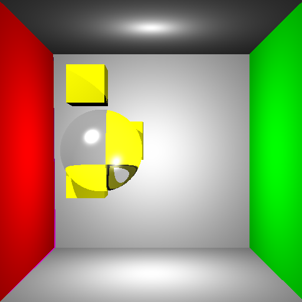
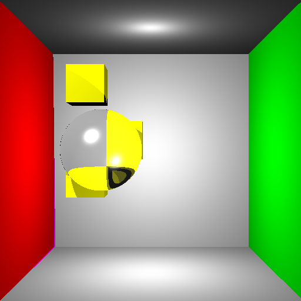
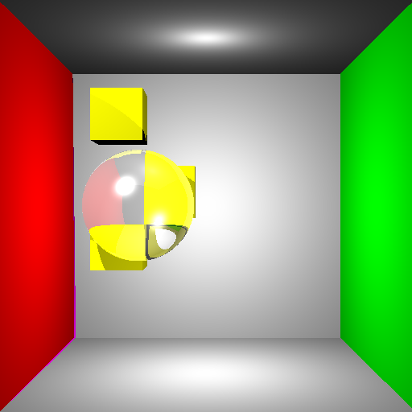

Objective 4:
Refraction
I was so excited to start my Raytracer Project after finishing the Raytracer Assignment that I wanted to do an easier objective first. I made this pretty Cornell Box to test refraction.
 Refraction with Ni/Nt = 1.0/1.22  Refraction with Ni/Nt = 1.0/1.33  Refraction and reflection combined together |
Written by: Mike Jutan
CS 488 - Computer Graphics
University of Waterloo